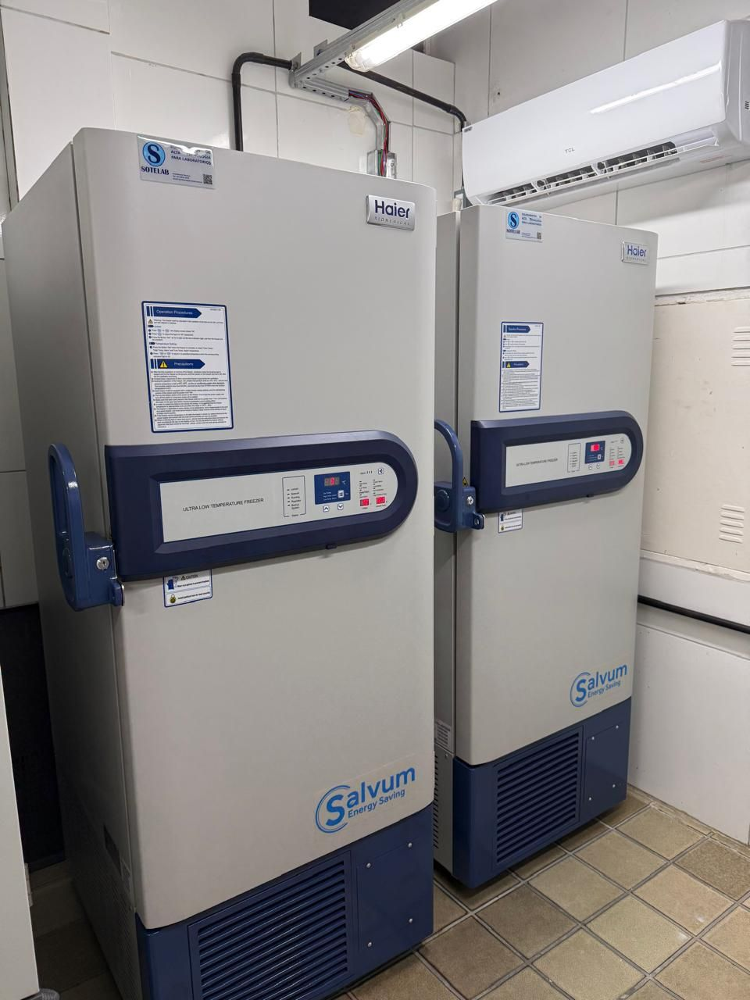
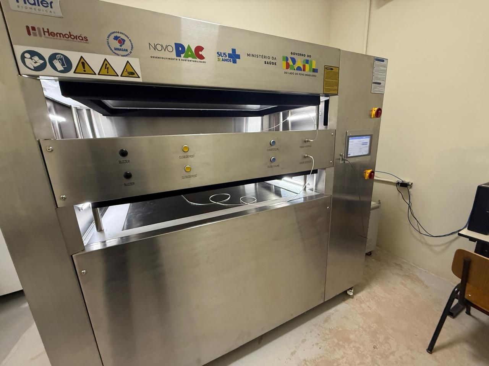
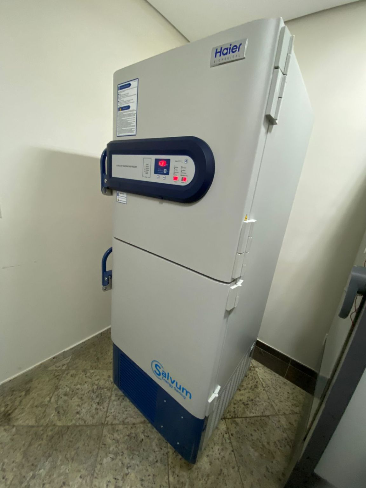
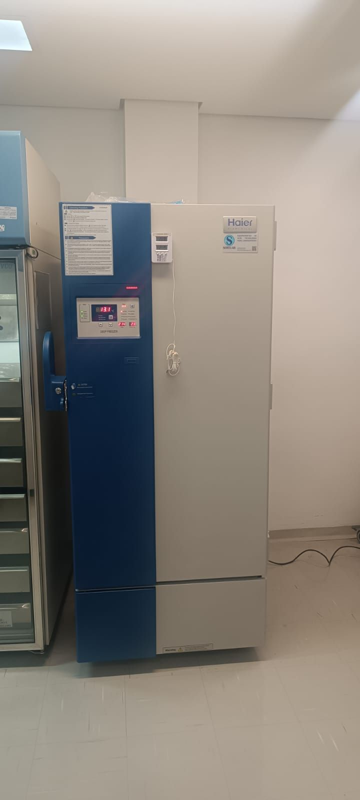

Protótipo para revisão interna.
Digite a senha para continuar.
Equipamento parado é pesquisa parada, diagnóstico atrasado, amostra em risco. Mantemos estrutura própria de assistência técnica para que os seus equipamentos mantenham sempre o melhor desempenho — com qualidade, segurança e agilidade no atendimento.
Cobrimos todo o ciclo de vida do equipamento, do start-up à rotina do laboratório.

Plano periódico que mantém o equipamento dentro da especificação e evita a parada inesperada — o tipo de falha que custa amostra, e não só conserto.

Quando o equipamento para, o tempo é o que importa. Fazemos o diagnóstico da causa e o reparo com peças originais, sem improviso que volte a falhar depois.

O start-up bem feito define a vida útil do equipamento. Entregamos instalado, testado e com a sua equipe sabendo operar.
Também oferecemos
Dúvida de operação ou uma ocorrência urgente? Fale com a equipe por telefone, e-mail ou WhatsApp e avaliamos se é resolvível à distância antes de agendar a visita.
Solicitar contato →Pacote periódico com condições especiais de prazo de atendimento e disponibilidade de peças, montado de acordo com o parque de equipamentos do seu laboratório.
Solicitar contato →Fornecimento avulso de peças originais e consumíveis para equipes de engenharia clínica que fazem a própria reposição.
Solicitar contato →Um processo simples e rastreável, do chamado ao relatório técnico.
Você nos aciona e registramos o equipamento, o modelo e a ocorrência.
A equipe avalia e identifica a causa — remotamente ou em campo.
Proposta com peças e prazo definidos, de forma clara e sem surpresa.
Reparo ou manutenção com peças originais e equipe treinada pelos fabricantes.
Registro técnico do serviço executado, com as peças e intervenções realizadas.
Instalações realizadas pela nossa equipe técnica em instituições de referência.

Instalação de dois Ultra Freezers Haier Biomedical no Laboratório Central de Saúde Pública da Paraíba, ampliando a capacidade de armazenamento seguro de amostras.

Instalação do Blast Freezer Haier Biomedical, unindo tecnologia, segurança e alto desempenho para uma instituição de referência em hemoterapia.

Instalação de freezer Haier Biomedical, garantindo mais eficiência e segurança no armazenamento de materiais e amostras sensíveis.

Instalação do freezer de −30 °C da Haier Biomedical, com todos os procedimentos técnicos e treinamento operacional da equipe.
Sim. Atendemos os equipamentos das marcas que representamos independentemente de onde foram adquiridos. Para outras marcas, avaliamos a viabilidade caso a caso.
Sim. Trabalhamos com peças originais dos fabricantes que representamos, o que preserva a garantia e o desempenho especificado do equipamento.
Sim. Operamos a partir das unidades do Rio de Janeiro (matriz) e São Paulo (filial), com atendimento em todo o território nacional.
Basta acionar o departamento técnico por telefone, e-mail ou WhatsApp com o modelo do equipamento e a descrição da ocorrência. O contato está no fim desta página.
Responsável Técnica
Estamos prontos para ajudar você a manter o seu laboratório em pleno funcionamento.